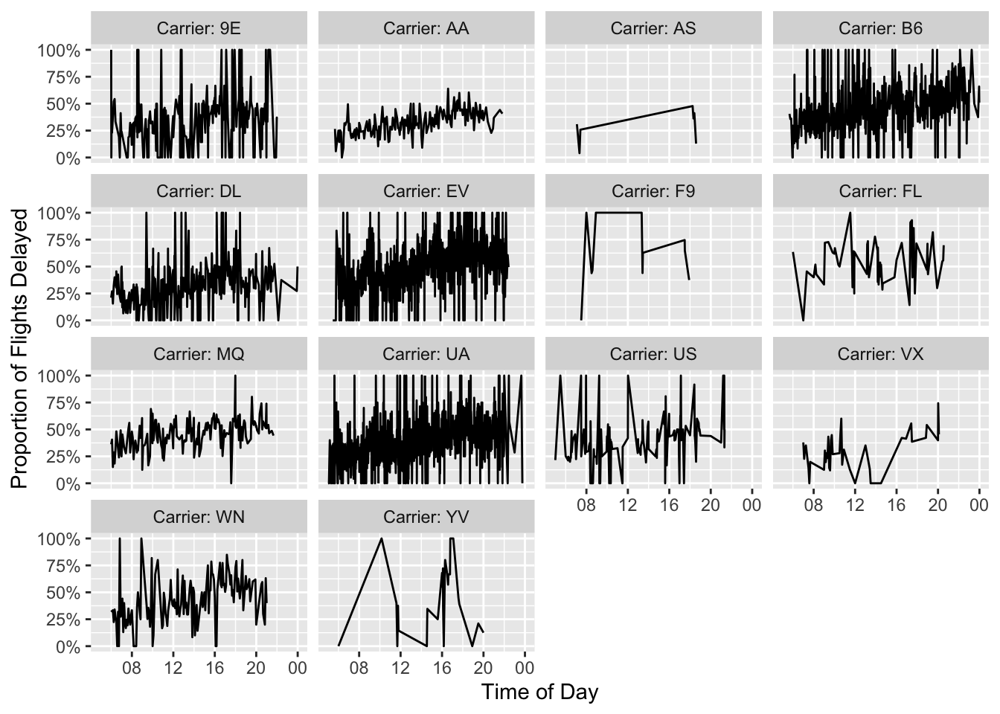

library(tidyverse)
library(here)
library(dbplyr)
library(rsample)Pre-lecture materials
Acknowledgements
Material for this lecture was borrowed and adopted from
Learning objectives
Learning objectives
At the end of this lesson you will:
- Recognize different file formats to work with large data not locally
- Implement three ways to work with large data:
- “sample and model”
- “chunk and pull”
- “push compute to data”
Introduction
First, we load a few R packages
For most data analyses in R, data you encounter can easily be read into memory in R (either locally or on a cluster of sorts) and analyzed in a standard way.
However, if you do encounter data that is too big to be read into memory, you might start to search for strategies on how to deal with this data.
For most of people, it might be obvious why you would want to use R with big data, but it not obvious how.
Now, you might say advances in hardware make this less and less of a problem as most laptops come with >8-32Gb of memory and it is easy to get instances on cloud providers with terabytes of RAM.
That’s definitely true. But there might be some problems that you will run into.
Loading data into memory
Let’s say you are able load part of the data into the RAM on your machine (in-memory).
If you had something like a zipped .csv file, you could always try loading just the first few lines into memory (see n_max = 8 below) to see what is inside the files, but eventually you will likely need a different strategy.
read_csv(readr_example("mtcars.csv.bz2"),
skip = 0, n_max = 8, progress = show_progress())# A tibble: 8 × 11
mpg cyl disp hp drat wt qsec vs am gear carb
<dbl> <dbl> <dbl> <dbl> <dbl> <dbl> <dbl> <dbl> <dbl> <dbl> <dbl>
1 21 6 160 110 3.9 2.62 16.5 0 1 4 4
2 21 6 160 110 3.9 2.88 17.0 0 1 4 4
3 22.8 4 108 93 3.85 2.32 18.6 1 1 4 1
4 21.4 6 258 110 3.08 3.22 19.4 1 0 3 1
5 18.7 8 360 175 3.15 3.44 17.0 0 0 3 2
6 18.1 6 225 105 2.76 3.46 20.2 1 0 3 1
7 14.3 8 360 245 3.21 3.57 15.8 0 0 3 4
8 24.4 4 147. 62 3.69 3.19 20 1 0 4 2Memory for calculations
You have to keep in mind that you will need to do something with the data too (typically need 2-3 times the RAM of the size of your data).
This may or may not be a problem for your hardware that you are working with.
Transfer speeds can be slow
If you are working with data on a server that needs to be transferred somewhere to do the processing or computation once the data has been transferred.
For example, the time it takes to make a call over the internet from San Francisco to New York City takes over 4 times longer than reading from a standard hard drive and over 200 times longer than reading from a solid state hard drive.

This is an especially big problem early in developing a model or performing a data analysis, when data might have to be pulled repeatedly.
Today we are going to discuss some strategies (and R packages) for working with big data in R. We will also go through some examples of how to execute these strategies in R.
Data
We will use the nycflights13 data that we learned about previously.
What’s in the data package?
“This package contains information about all flights that departed from NYC (e.g. EWR, JFK and LGA) to destinations in the United States, Puerto Rico, and the American Virgin Islands) in 2013: 336,776 flights in total. To help understand what causes delays, it also includes a number of other useful datasets.”
This package provides the following data tables.
flights: all flights that departed from NYC in 2013weather: hourly meterological data for each airportplanes: construction information about each planeairports: airport names and locationsairlines: translation between two letter carrier codes and names
However, this time we will cache the data from the nycflights13 package in a form we are already familiar with (SQLite databases). But there are many other data formats that you might encounter including:
.sqlite(SQL database). Talk more about this in a bit..csv(comma separated values). Good for storing rectangular data. However, can really slow to read and write, making them (often) unusable for large datasets..json(JavaScript object notation). Key-value pairs in a partially structured format.parquet(Apache Parquet). Developed by Cloudera and Twitter to serve as a column-based storage format, optimized for work with multi-column datasets. Can be used for Spark data or other tools in the Hadoop ecosystem. When you store data in parquet format, you actually get a whole directory worth of files. The data is split across multiple.parquetfiles, allowing it to be easily stored on multiple machines, and there are some metadata files too, describing the contents of each column. Can usesparklyrto import.parquetfiles.avro(Apache Avro). Released by the Hadoop working group in 2009. It is a row-based format that is highly splittable. It is also described as a data serialization system similar to Java Serialization. The schema is stored in JSON format, while the data is stored in binary format, minimizing file size and maximizing efficiency. Can usesparkavroto import.avrofiles..zarr(Zarr). Zarr files are a modern library and data format for storing chunked, compressed N-dimensional data in Python, but can work with these files using reticulate. Still very much in development though..h5(Hierarchical Data Format or HDF5). Mature (20 years old) library and data format which is also designed to handle chunked compressed N-dimensional data. Can userhdf5andHDF5Arrayto read and write.h5files.
SQLite databases
OK so as mentioned above, let’s use the SQLite format to demonstrate the strategies for dealing with large data. However, they can easily transfer other data formats.
Reminder: There are several ways to query SQL or SQLite databases in R.
Ok, we will set up the SQLite database using the nycflights13_sqlite() function in the dbplyr package.
library(nycflights13)
if(!file.exists(here("data", "nycflights13", "nycflights13.sqlite"))){
dir.create(here("data", "nycflights13"))
dbplyr::nycflights13_sqlite(path=here("data", "nycflights13"))
}We can check to see what file has been created
list.files(here("data", "nycflights13"))[1] "nycflights13.sqlite"
Question
How can we use the DBI::dbConnect() function with RSQLite::SQLite() backend to connect to the SQLite database?
library(DBI)
# try it yourself Click here for the answer.
library(DBI)
conn <- dbConnect(RSQLite::SQLite(),
here("data", "nycflights13", "nycflights13.sqlite"))
conn<SQLiteConnection>
Path: /Users/stephaniehicks/Documents/github/teaching/jhustatprogramming2022/data/nycflights13/nycflights13.sqlite
Extensions: TRUE
Question
Next, let’s use the dplyr::tbl() function returns something that feels like a data frame with the flights dataset. Finally, show the first 10 rows of the data frame.
# try it yourself Click here for the answer.
tbl(conn, "flights") %>%
head(n=10)# Source: SQL [10 x 19]
# Database: sqlite 3.39.4 [/Users/stephaniehicks/Documents/github/teaching/jhustatprogramming2022/data/nycflights13/nycflights13.sqlite]
year month day dep_time sched_de…¹ dep_d…² arr_t…³ sched…⁴ arr_d…⁵ carrier
<int> <int> <int> <int> <int> <dbl> <int> <int> <dbl> <chr>
1 2013 1 1 517 515 2 830 819 11 UA
2 2013 1 1 533 529 4 850 830 20 UA
3 2013 1 1 542 540 2 923 850 33 AA
4 2013 1 1 544 545 -1 1004 1022 -18 B6
5 2013 1 1 554 600 -6 812 837 -25 DL
6 2013 1 1 554 558 -4 740 728 12 UA
7 2013 1 1 555 600 -5 913 854 19 B6
8 2013 1 1 557 600 -3 709 723 -14 EV
9 2013 1 1 557 600 -3 838 846 -8 B6
10 2013 1 1 558 600 -2 753 745 8 AA
# … with 9 more variables: flight <int>, tailnum <chr>, origin <chr>,
# dest <chr>, air_time <dbl>, distance <dbl>, hour <dbl>, minute <dbl>,
# time_hour <dbl>, and abbreviated variable names ¹sched_dep_time,
# ²dep_delay, ³arr_time, ⁴sched_arr_time, ⁵arr_delayBefore we jump into the next section, let’s save this data frame as flights_df and count the number of rows using dplyr::tally():
flights_df <- dplyr::tbl(conn, "flights")
flights_df %>%
tally()# Source: SQL [1 x 1]
# Database: sqlite 3.39.4 [/Users/stephaniehicks/Documents/github/teaching/jhustatprogramming2022/data/nycflights13/nycflights13.sqlite]
n
<int>
1 336776Even though it only has a few hundred thousand rows, it is still useful to demonstrate some strategies for dealing with big data in R.
Sample and Model
The first strategy is to downsample your data to a size that can be downloaded (or if already downloaded, just loaded into memory) and perform your analysis on the downsampled data. This also allows models and methods to be run in a reasonable amount of time.

Note
If maintaining class balance is necessary (or one class needs to be over/under-sampled), it is reasonably simple to stratify the data set during sampling.
Advantages
- Speed. Relative to working on your entire data set, working on just a sample can drastically decrease run times and increase iteration speed.
- Prototyping. Even if you will eventually have to run your model on the entire data set, this can be a good way to refine hyperparameters and do feature engineering for your model.
- Packages. Since you are working on a regular, in-memory data set, you can use all your favorite R packages.
Disadvantages
- Sampling. Downsampling is not terribly difficult, but does need to be done with care to ensure that the sample is valid and that you have pulled enough points from the original data set.
- Scaling. If you are using sample and model to prototype something that will later be run on the full data set, you will need to have a strategy (such as pushing compute to the data) for scaling your prototype version back to the full data set.
- Totals. Business Intelligence (BI) – or strategies and technologies used by enterprises for the data analysis of business information (e.g. data mining, reporting, predictive analytics, etc) – tasks frequently answer questions about totals, like the count of all sales in a month. One of the other strategies is usually a better fit in this case.
Example
Let’s say we want to model whether flights will be delayed or not. We will start with some minor cleaning of the data.
First, we will create a is_delayed column in the database:
flights_df <-
flights_df %>%
dplyr::mutate(is_delayed = arr_delay > 0,
hour = sched_dep_time / 100) %>% # Get just hour (currently formatted so 6 pm = 1800)
# Remove small carriers that make modeling difficult
dplyr::filter(!is.na(is_delayed) & !carrier %in% c("OO", "HA"))Here are the total number of flights that were delayed or not:
flights_df %>%
dplyr::count(is_delayed)# Source: SQL [2 x 2]
# Database: sqlite 3.39.4 [/Users/stephaniehicks/Documents/github/teaching/jhustatprogramming2022/data/nycflights13/nycflights13.sqlite]
is_delayed n
<int> <int>
1 0 194078
2 1 132897These classes are reasonably well balanced, but we going to use logistic regression, so I will load a perfectly balanced sample of 40,000 data points.
For most databases, random sampling methods do not work smoothly with R.
flights_df %>%
dplyr::sample_n(size = 1000)Error in `dplyr::sample_n()`:
! `tbl` must be a data frame, not a
`tbl_SQLiteConnection/tbl_dbi/tbl_sql/tbl_lazy/tbl` object.So it is not suggested to use dplyr::sample_n() or dplyr::sample_frac(). So we will have to be a little more manual.
set.seed(1234)
# Create a modeling data set
df_mod <- flights_df %>%
# Within each class
group_by(is_delayed) %>%
# Assign random rank
mutate(x = random() %>% row_number()) %>%
ungroup()
Note
dplyr::collect() forces a computation of a database query and retrieves data into a local tibble
So, here, we take the first 20K for each class for training set:
df_train <- df_mod %>%
group_by(is_delayed) %>%
filter(x <= 20000) %>%
collect() Then, we take next 5K for test set:
df_test <- df_mod %>%
group_by(is_delayed) %>%
filter(x > 20000 & x <= 25000) %>%
collect() # again, this data is now loaded locally# Double check I sampled right
count(df_train, is_delayed)# A tibble: 2 × 2
# Groups: is_delayed [2]
is_delayed n
<int> <int>
1 0 20000
2 1 20000count(df_test, is_delayed)# A tibble: 2 × 2
# Groups: is_delayed [2]
is_delayed n
<int> <int>
1 0 5000
2 1 5000Now let’s build a model – let’s see if we can predict whether there will be a delay or not by the combination of the carrier, and the month of the flight.
Sys.time()[1] "2022-12-19 21:36:57 EST"mod <- glm(is_delayed ~ carrier + as.factor(month),
family = "binomial", data = df_train)
Sys.time()[1] "2022-12-19 21:36:57 EST"summary(mod)
Call:
glm(formula = is_delayed ~ carrier + as.factor(month), family = "binomial",
data = df_train)
Deviance Residuals:
Min 1Q Median 3Q Max
-1.79269 -1.15542 -0.04267 1.14716 1.67082
Coefficients:
Estimate Std. Error z value Pr(>|z|)
(Intercept) 0.01961 0.05558 0.353 0.72421
carrierAA -0.26855 0.05544 -4.844 1.27e-06 ***
carrierAS -0.32107 0.23548 -1.363 0.17274
carrierB6 0.16575 0.05085 3.260 0.00111 **
carrierDL -0.23324 0.05197 -4.488 7.18e-06 ***
carrierEV 0.35495 0.05121 6.932 4.15e-12 ***
carrierF9 0.59946 0.22762 2.634 0.00845 **
carrierFL 0.92949 0.11329 8.205 2.31e-16 ***
carrierMQ 0.26200 0.05753 4.554 5.26e-06 ***
carrierUA -0.04251 0.05040 -0.843 0.39898
carrierUS -0.07923 0.06119 -1.295 0.19537
carrierVX -0.16343 0.09266 -1.764 0.07776 .
carrierWN 0.28121 0.06864 4.097 4.19e-05 ***
carrierYV -0.01023 0.24384 -0.042 0.96653
as.factor(month)2 0.02926 0.05178 0.565 0.57199
as.factor(month)3 -0.11474 0.04987 -2.301 0.02140 *
as.factor(month)4 0.11632 0.04911 2.368 0.01787 *
as.factor(month)5 -0.23733 0.04973 -4.773 1.82e-06 ***
as.factor(month)6 0.13217 0.04973 2.658 0.00787 **
as.factor(month)7 0.20496 0.04909 4.175 2.98e-05 ***
as.factor(month)8 -0.11376 0.04912 -2.316 0.02055 *
as.factor(month)9 -0.80984 0.05294 -15.297 < 2e-16 ***
as.factor(month)10 -0.32064 0.04946 -6.482 9.03e-11 ***
as.factor(month)11 -0.29724 0.04992 -5.954 2.61e-09 ***
as.factor(month)12 0.43399 0.05017 8.650 < 2e-16 ***
---
Signif. codes: 0 '***' 0.001 '**' 0.01 '*' 0.05 '.' 0.1 ' ' 1
(Dispersion parameter for binomial family taken to be 1)
Null deviance: 55452 on 39999 degrees of freedom
Residual deviance: 54081 on 39975 degrees of freedom
AIC: 54131
Number of Fisher Scoring iterations: 4# Out-of-Sample AUROC
df_test$pred <- predict(mod, newdata = df_test)
auc <- suppressMessages(pROC::auc(df_test$is_delayed, df_test$pred))
aucArea under the curve: 0.6031As you can see, this is not a great model, but that’s not the point here!
Instead, we showed how to build a model on a small subset of a big data set. Including sampling time, this took my laptop a second to run, making it easy to iterate quickly as I want to improve the model. After I’m happy with this model, I could pull down a larger sample or even the entire data set if it is feasible, or do something with the model from the sample.
Chunk and Pull
A second strategy to chunk the data into separable units and each chunk is pulled separately and operated on serially, in parallel, or after recombining.
This strategy is conceptually similar to the MapReduce algorithm – or MapReduce is a framework using which we can write applications to process huge amounts of data, in parallel, on large clusters in a reliable manner – more here on MapReduce.
Depending on the task at hand, the chunks might be time periods, geographic units, or logical like separate businesses, departments, products, or customer segments.

Advantages
- Full data set. The entire data set gets used.
- Parallelization. If the chunks are run separately, the problem is easy to treat as embarassingly parallel and make use of parallelization to speed runtimes.
Disadvantages
- Need Chunks. Your data needs to have separable chunks for chunk and pull to be appropriate.
- Pull All Data. Eventually have to pull in all data, which may still be very time and memory intensive.
- Stale Data. The data may require periodic refreshes from the database to stay up-to-date since you’re saving a version on your local machine.
Example
In this case, I want to build another model of on-time arrival, but I want to do it per-carrier. This is exactly the kind of use case that is ideal for chunk and pull.
I am going to separately pull the data in by carrier and run the model on each carrier’s data.
I am going to start by just getting the complete list of the carriers.
# Get all unique carriers
carriers <- flights_df %>%
select(carrier) %>%
distinct() %>%
pull(carrier)
carriers [1] "9E" "AA" "AS" "B6" "DL" "EV" "F9" "FL" "MQ" "UA" "US" "VX" "WN" "YV"Now, I will write a function that
- takes the name of a carrier as input
- pulls the data for that carrier into R
- splits the data into training and test
- trains the model
- outputs the out-of-sample AUROC (a common measure of model quality)
carrier_model <- function(carrier_name) {
# Pull a chunk of data
df_mod <- flights_df %>%
filter(carrier == carrier_name) %>%
collect()
# Split into training and test
split <- df_mod %>%
rsample::initial_split(prop = 0.9, strata = "is_delayed") %>%
suppressMessages()
# Get training data
df_train <- split %>%
rsample::training()
# Train model
mod <- glm(is_delayed ~ as.factor(month),
family = "binomial", data = df_train)
# Get out-of-sample AUROC
df_test <- split %>%
rsample::testing()
df_test$pred <- predict(mod, newdata = df_test)
suppressMessages(auc <- pROC::auc(df_test$is_delayed ~ df_test$pred))
auc
}Now, I am going to actually run the carrier model function across each of the carriers. This code runs pretty quickly, and so I do not think the overhead of parallelization would be worth it.
set.seed(1234)
mods <- lapply(carriers, carrier_model) %>%
suppressMessages()
names(mods) <- carriersLet’s look at the results.
mods$`9E`
Area under the curve: 0.5711
$AA
Area under the curve: 0.5731
$AS
Area under the curve: 0.5597
$B6
Area under the curve: 0.6208
$DL
Area under the curve: 0.5817
$EV
Area under the curve: 0.588
$F9
Area under the curve: 0.5134
$FL
Area under the curve: 0.5508
$MQ
Area under the curve: 0.572
$UA
Area under the curve: 0.6046
$US
Area under the curve: 0.5811
$VX
Area under the curve: 0.67
$WN
Area under the curve: 0.5607
$YV
Area under the curve: 0.6041So these models (again) are a little better than random chance. The point was that we utilized the chunk and pull strategy to pull the data separately by logical units and building a model on each chunk.
Push Compute to Data
A third strategy is push some of the computing to where the data are stored before moving a subset of the data out of wherever it is stored and into R.
Imagine the data is compressed on a database somwhere. It is often possible to obtain significant speedups simply by doing summarization or filtering in the database before pulling the data into R.
Sometimes, more complex operations are also possible, including computing histogram and raster maps with dbplot, building a model with modeldb, and generating predictions from machine learning models with tidypredict.

Advantages
- Use the Database. Takes advantage of what databases are often best at: quickly summarizing and filtering data based on a query.
- More Info, Less Transfer. By compressing before pulling data back to R, the entire data set gets used, but transfer times are far less than moving the entire data set.
Disadvantages
- Database Operations. Depending on what database you are using, some operations might not be supported.
- Database Speed. In some contexts, the limiting factor for data analysis is the speed of the database itself, and so pushing more work onto the database is the last thing analysts want to do.
Example
In this case, I am doing a pretty simple BI task - plotting the proportion of flights that are late by the hour of departure and the airline.
Just by way of comparison, let’s run this first the naive way -– pulling all the data to my system and then doing my data manipulation to plot.
system.time(
df_plot <- flights_df %>%
collect() %>%
group_by(carrier, sched_dep_time) %>%
# Get proportion per carrier-time
summarize(delay_pct = mean(is_delayed, na.rm = TRUE)) %>%
ungroup() %>%
# Change string times into actual times
dplyr::mutate(sched_dep_time =
stringr::str_pad(sched_dep_time, 4, "left", "0") %>%
strptime("%H%M") %>% # converts character class into POSIXlt class
as.POSIXct()) # converts POSIXlt class to POSIXct class
) -> timing1
timing1 user system elapsed
1.280 0.026 1.308 Now that wasn’t too bad, just 1.308 seconds on my laptop.
But let’s see how much of a speedup we can get from chunk and pull. The conceptual change here is significant - I’m doing as much work as possible in the SQLite server now instead of locally.
But using dplyr means that the code change is minimal. The only difference in the code is that the collect() call got moved down by a few lines (to below ungroup()).
system.time(
df_plot <- flights_df %>%
dplyr::group_by(carrier, sched_dep_time) %>%
# Get proportion per carrier-time
dplyr::summarize(delay_pct = mean(is_delayed, na.rm = TRUE)) %>%
dplyr::ungroup() %>%
dplyr::collect() %>%
# Change string times into actual times
dplyr::mutate(sched_dep_time =
stringr::str_pad(sched_dep_time, 4, "left", "0") %>%
strptime("%H%M") %>%
as.POSIXct())) -> timing2`summarise()` has grouped output by "carrier". You can override using the
`.groups` argument.timing2 user system elapsed
0.510 0.052 0.564 It might have taken you the same time to read this code as the last chunk, but this took only 0.564 seconds to run, almost an order of magnitude faster! That’s pretty good for just moving one line of code.
Now that we have done a speed comparison, we can create the nice plot we all came for.
df_plot %>%
dplyr::mutate(carrier = paste0("Carrier: ", carrier)) %>%
ggplot(aes(x = sched_dep_time, y = delay_pct)) +
geom_line() +
facet_wrap("carrier") +
ylab("Proportion of Flights Delayed") +
xlab("Time of Day") +
scale_y_continuous(labels = scales::percent) +
scale_x_datetime(date_breaks = "4 hours",
date_labels = "%H")
It looks to me like flights later in the day might be a little more likely to experience delays.
Summary
There are lots of ways you can work with large data in R. A few that we learned about today include
- Sample and model
- Chunk and pull
- Push compute to data
Hopefully this will help the next time you encounter a large dataset in R.